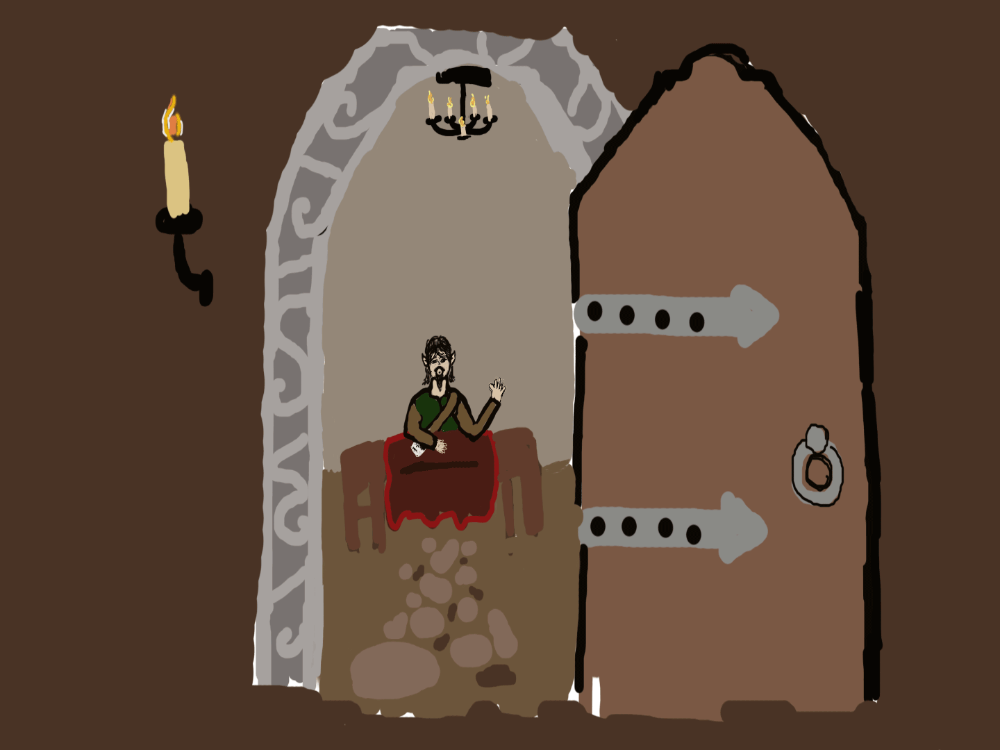

I chose to animate my character Elrond sitting down and waving at a newcomer, from their point of view (POV). I chose dark earthy colors to illustrate this because they live underground. I used light sources in the form of candles to illuminate the room and tried to give it a flickering affect to bring it to life. The most challenging part of this project for me was drawing my idea, and then copying frames with the intent on editing them, and putting them in the order.
